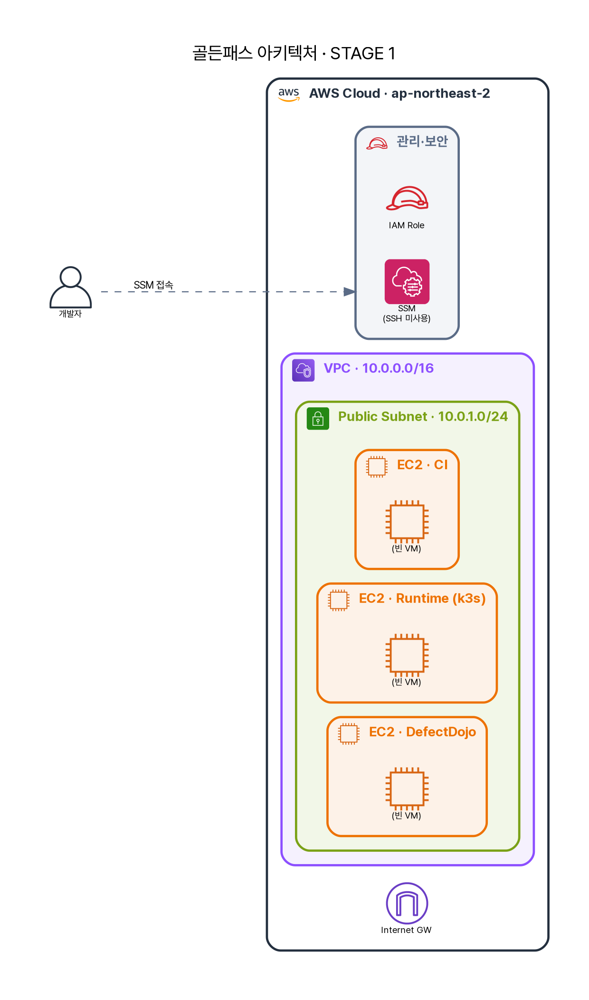

1화 · "그거 어디서 돌릴 건데요?"¶
입사 첫 주, A에게 미션이 떨어졌다. "우리 서비스에 DevSecOps 골든 패스를 깔아봐." 의욕이 넘친 A는 노트북에 trivy를 깔고 첫 스캔을 돌리려던 참이었다. 그때 시니어가 모니터를 들여다봤다.
"그거 어디서 돌릴 건데?" "어… 제 노트북에서요?" "다음 사람은? 너 휴가 가면? 그리고 운영 서버엔 어떻게 접속할 건데 — SSH 키 슬랙으로 돌릴 거야?"
A는 말문이 막혔다. 보안 도구를 돌리기도 전에 두 개의 벽에 부딪힌 것이다. 하나, 검사를 돌릴 일관된 공간이 없다. "내 노트북에선 됐는데"는 모든 사고의 시작이다. 둘, 서버 접속이 안전하지 않다. 키는 새고, 공유되고, 누가 언제 들어왔는지 남지 않는다. 도구를 고르기 전에, 도구가 설 자리부터 정해야 했다.
내 노트북에선 됐는데 — 그게 문제다¶
시니어가 저장소 하나를 가리켰다. infra-terraform-repo. A가 terraform apply 한 줄을 치자 몇 분 뒤 AWS에 VM 세 대가 떴다.

아직은 빈 VM 세 대다 — CI용, 런타임(k3s)용, 증적(DefectDojo)용. 앞으로 열두 화에 걸쳐 여기에 무기가 하나씩 쌓인다. A가 친 한 줄이 무엇을 만들었는지 코드로 보면 이렇다.
module "network" { source = "../../modules/network" ... } # VPC · 서브넷 · IGW
module "iam" { source = "../../modules/iam" ... } # VM이 달 IAM Role
module "security_groups" {
source = "../../modules/security-groups"
allowed_admin_cidr = var.allowed_admin_cidr # ← 관리 접근을 '내 IP'로 제한
}
module "ec2" {
ci_user_data = file(".../scripts/user-data/ci-server.sh") # VM이 켜지며 스스로 무장
runtime_user_data = file(".../scripts/user-data/runtime-server.sh")
}
손으로 세팅한 서버는 다음에 똑같이 못 만든다. 누가 무엇을 어떤 순서로 깔았는지 기억에만 남고, 사람이 바뀌면 사라진다. 코드로 박으면 그 전부가 git에 남고, 통째로 날려도 한 줄로 재현된다. terraform이 푸는 건 "편하게 만들기"가 아니라 "내 노트북에선 됐는데"를 조직에서 지우기다.
그리고 ci_user_data 한 줄에 더 중요한 게 숨어 있다 — VM은 켜지면서 스스로 도구를 깐다.
dnf install -y docker git jq java-21-amazon-corretto jenkins # Java 17로 깔면 Jenkins 안 뜸(실제 함정)
usermod -aG docker jenkins # 파이프라인이 호스트 docker로 빌드
# 다음 화부터 등장할 무기들이 여기서 설치된다
curl -sfL .../trivy/install.sh | sh # 이미지·SBOM 취약점
curl -sSfL .../syft/install.sh | sh # SBOM 생성
# gitleaks(시크릿) · kubescape(K8s) 도 함께
A는 여기서 작은 걸 하나 배운다. java-21에 달린 주석 — Java 17로 깔면 Jenkins가 안 뜬다는, 누군가 실제로 삽질하고 남긴 흔적이다. 코드로 박은 인프라엔 실패의 기억까지 적힌다. 손으로 했다면 다음 사람이 똑같이 헤맸을 것이다.
SSH를 없앤다¶
작업장은 섰다. A는 습관대로 접속을 시도했다. ssh ec2-user@… — 안 된다. 22번 포트가 닫혀 있다.
"어… SSH가 안 되는데요?" "응, 없앴어. 이거 써."
세션이 열렸다. 왜 SSH를 없앴나. 키는 분실·유출·공유의 온상이고, 누가 언제 들어왔는지 추적이 약하다. SSM은 키 없이 IAM 권한으로 들어가고(그래서 아까 module.iam이 필요했다), 모든 접속이 CloudTrail에 기록된다. A가 방금 연 세션도, 그가 무엇을 쳤는지도 전부 남는다.
여기서 A가 첫날 가장 크게 배운 게 이거였다. 보안의 시작은 도구를 더 까는 게 아니라 "누가 무엇을 했는지 남는가"다. 핵심은 "SSH를 없앴다"가 아니라 "접근을 IAM과 감사 로그로 통제했다"는 것 — 도구가 아니라 통제가 먼저다.
"세웠다"와 "안전하다"는 다르다¶
그렇다고 이 작업장을 미화하면 안 된다. A는 정직하게 빈틈을 적었다.
SSM도 완벽하지 않다. 에이전트가 죽거나 IAM이 꼬이면 들어갈 길이 없다. 그래서 실무는 비상(break-glass) 경로를 따로 두고, 그 경로를 누가 소유하고 언제 승인하는지까지 정의한다 — 그게 빠지면 SSM은 편의일 뿐 통제가 아니다. VM이 퍼블릭 서브넷에 있는 것도 PoC라 단순화한 선택이다. allowed_admin_cidr로 관리 접근을 내 IP로 좁혔지만, 프로덕션이라면 프라이빗 서브넷 + Bastion/VPN이 정석이다. 레지스트리를 http로 연 것도 사설망 안이라 감수했을 뿐, TLS 부재는 공급망 무결성의 갭으로 뒤 화에서 다시 만난다.
이 빈틈들을 아는 채로 단순화한 것과, 모르고 그렇게 둔 것은 하늘과 땅 차이다. 트레이드오프를 말로 설명할 수 있는 게 실력이다.
A가 정리한 자리들¶
세계 최고의 보안 엔지니어는 "SSM 편하네"에서 멈추지 않는다. 접근통제 하나를 네 각도로 본다.
기술적으로는 SSH·키를 없애고 IAM 권한 기반 SSM으로 바꿔 모든 세션을 CloudTrail에 남겼고, 인프라 자체는 terraform으로 언제든 재현된다. 규제로 옮기면 이건 ISMS-P 2.6(접근통제)·2.5(인증·권한)·2.9·2.11(접속기록 관리)을 정면으로 만족시키고, PCI-DSS Req 7·8·10과 전자금융감독규정의 접근통제 요구에 닿는다. 정책의 영역에서는 "관리 접근은 키 없이, IAM 권한과 감사 로그로만"을 인프라 코드로 강제했다는 게 핵심이다 — allowed_admin_cidr 한 줄이 최소 노출 원칙을 코드로 박은 것이다. 관리의 영역에서, 권한의 부여·회수는 IAM이라는 단일 지점에서 일어나고 CloudTrail이 감사 추적의 원천이 된다. 그리고 break-glass 경로를 누가 소유·승인하는지 — 그 한 가지가 진짜 운영 성숙도를 가른다.
첫날 A가 얻은 문장은 하나다. "세웠다"와 "안전하다"는 다르다. 이 교본은 그 사이의 거리를 한 화씩 좁히는 이야기다.
작업장은 섰고, A는 의욕이 넘쳐 도구를 하나씩 깔아 손으로 돌려본다 — Gitleaks, SonarQube, Trivy… 다 된다. 그때 시니어의 한마디. "그래서, 개발자가 push할 때마다 그 일곱 개를 네가 손으로 다 돌릴 거야?"
다음 → 2화 · "근데 이걸 누가 다 돌려요?"